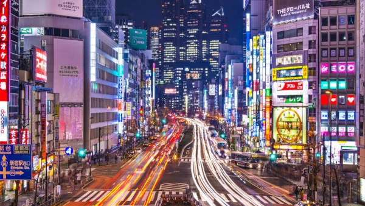

O Japão oferece uma grande diversidade de cidades para estudar e viver. Cada uma tem características únicas, desde metrópoles tecnológicas até cidades mais tranquilas e históricas. Aqui está nosso ranking das melhores cidades para intercâmbio, levando em consideração qualidade de vida, custo, oportunidades e experiências culturais.
Cidades Disponíveis – Onde Estudar e Viver no Japão
Tóquio - (東京)
A capital do Japão é uma metrópole vibrante com infinitas possibilidades. Conta com as melhores escolas de idiomas, universidades renomadas e diversas oportunidades de emprego. É perfeita para quem deseja estar no centro da tecnologia, moda e cultura pop japonesa.
Melhor para: Quem busca inovação, oportunidades de trabalho e vida urbana intensa.
Custo de vida: Alto
Universidades de destaque: Universidade de Tóquio (Todai), Waseda, Keio
Transporte: Extensa rede de metrô e trens eficientes
Osaka - (大阪)
Melhor para: Quem quer uma cidade grande, mas mais descontraída que Tóquio. Osaka é conhecida por sua hospitalidade e clima mais descontraído. A cidade tem um ótimo custo-benefício para estudantes e oferece muitas oportunidades de trabalho, principalmente na área de serviços. Além disso, é o paraíso dos amantes da comida japonesa, com pratos como okonomiyaki e takoyaki.
Custo de vida: Moderado
Universidades de destaque: Universidade de Osaka, Kansai Gaidai
Transporte: Boa rede de metrô e trens